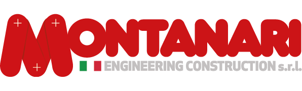
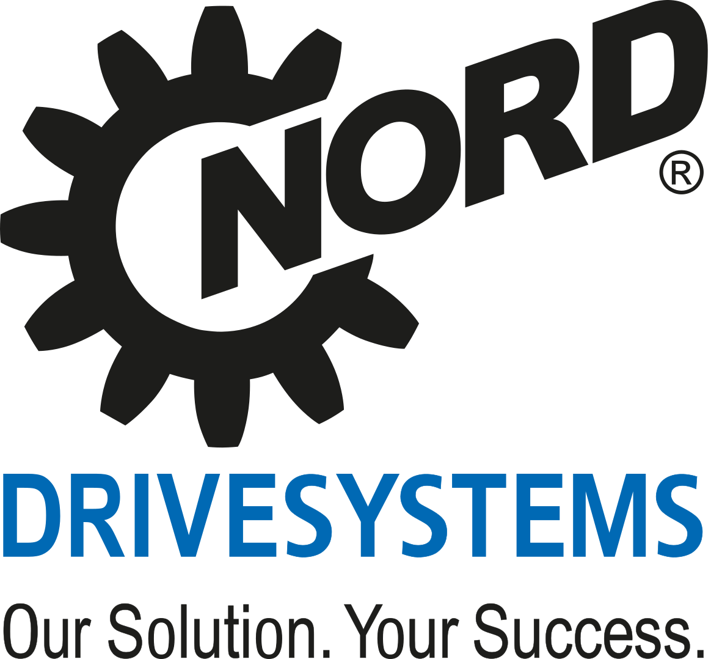

AI in Mechanical Engineering
Reflections on how artificial intelligence can support design, technical sales and decision-making in industrial automation.
Read more
Engineering industrial systems in the age of AI, combining mechanical expertise, international business development and intelligent tools to understand how automation, trust and human work are changing.
Registered Professional Engineer — Order of Engineers of ModenaMechanical Engineer with a strong technical and commercial background, specialized in automation, robotics, gearboxes, industrial machinery, and international business development.
During my career I developed business and technical relationships across China, India, Southeast Asia and Latin America.
My professional profile combines engineering expertise, strategic sales management and multicultural business experience, supported by AI tools that enhance research, analysis, communication and decision-making.
Reflections on how artificial intelligence can support design, technical sales and decision-making in industrial automation.
Read moreLessons from working with customers and partners across Asia, Latin America and international OEM networks.
Read moreWhy successful technical-commercial development starts by understanding the full machine, not only the single component.
Read moreMy work is increasingly focused on the connection between practical industrial experience and the strategic questions opened by artificial intelligence.
My professional path has been shaped by industrial companies, technical markets and international relationships.

Power transmission · Gearboxes · International markets
Oil & Gas · Technical sales · Industrial systems

Industrial automation · Laundry automation · Robotics

Drive systems · Gearmotors · Industrial automation
Gearboxes · Gearmotors · Power transmission
Hydraulic motors · Radial piston motors · Industrial applications

Media · Communications · International group
China · India · Southeast Asia
Mexico · Colombia · Brazil
Italy · International OEM Networks